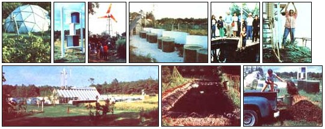

What if you could harvest 100 pounds of delectable fish per year, from a tank that's also an efficient solar collector and looks like an oversized living room aquarium? And what if you could drain off about 100 gallons of nutrient-rich waste water from the tank- each week to irrigate your garden and increase its productivity by as much as 100%? And what if you could then turn around and feed a portion of your fertilized garden's output-a forage crop that's 32% protein and high in B vitamins-back to the fish in the tank?
Does it all sound too good to be true? If so, consider the fact that such an aquaculture/agriculture symbiosis-a system that enables a one-calorie energy in put to yield five calories in tasty fish-is just one of the explorations into the ecological frontier that have occupied the New Alchemists of Falmouth, Massachusetts for the last ten years.
Marine biologists Dr. John Todd and Dr. William McLarney set out-one day back in the fall of 1969- to pursue an entire family of these symbiotic relationships ... with the ultimate hope of rearranging humankind's consumptive habits to the point where we could blend into the ecosystems we're now destroying.
In fact, the New Alchemy Institute is an ecostructure itself (which is, of course, composed of a variety of natural subsystems) ... one that has been carefully planned and then allowed to evolve. Yet-all through the ongoing process of failure, improvement, and change which makes up natural selection-the unvarying core of the alchemists' work has continued to be the study of the interrelation of aqua- and agriculture.
However, new projects have grown around the original backyard fish farm (which continues to produce a high-yield annual harvest inside its geodesic dome) and the wholistic gardens. Next to the first aquacultural project, for instance, is the three-level "miniark": a polycultural fish experiment where Sacramento River blackfish, Chinese mirror carp, and bullheads live in separate but connected ponds ... which serve one another by both controlling wastes and producing food.
Beside the ponds stands the sailwing windmill (locally known as "Big Red") that pumps the water for the mini-ark. The alchemists built the 20-foot-span wind machine from pieces of TV antenna, 3.4-ounce Dacron polyester, rubber bungee cords (for automatic rotor pitch control), and an old trailer tire ... that flexes to draw a gallon of water per stroke.
Though Big Red dominates the skyline of the 12-acre Cape Cod farm, there are actually seven windplants on the property ... serving purposes ranging from water circulation, to pumping air (for pond aeration), to 12-volt electrical production. Among them are commercial units such as Aermotor, Bowjon, Pinson, and Winco Wincharger, as well as two homemade Savonius rotors. Joe Seale, the group's windpower expert, sees a bright future in compressing refrigerants for community ice production as a means of storing the wind's energy.
Also dotted about the landscape are the latest versions of the alchemists' aquacultural efforts: double-layered fiberglass cylinders (made from a product called Kalwall) which hold about 700 gallons of water apiece and can produce two 50pound harvests per year of a hearty tropical fish called tilapia. The fish grow rapidly, thrive in the warm temperatures of solar-heated water, and-because they are vegetarian-tend to produce less toxic waste than do carnivorous species.
Ron Zwieg, one of the aquaculture experts at Falmouth, points out that each of the aquariums is an independent ecosystem that must be kept in balance. Algae grow readily in the water, and thrive on the waste products left by the fish (thus serving as biological filters). The plants also provide oxygen through photosynthesis, serve as mini-heat-sinks (as does any dark colored body), and provide a large part of the tilapia's food.
To do their job correctly, the algae must be kept in a constant growth phase ... a requirement which demands a partial exchange of water each week, filtering, and provision for an adequate (but not excessive) air supply. Any fluctuations of such factors as light, temperature, oxygen, and acidity are monitored by sensors in the tanks at fifteen-minute intervals. The results are then stored in a computer housed in a converted farm building, and are being used-according to Ron, alchemist systems analyst John Wolfe, and computer specialist Al Doolittle-to develop a manual which will enable nonscientists to control the aquatic conditions by sight and smell. (Over the past few years Zwieg himself has learned to recognize and identify the color and odor variations that signal problems in the solar pond.)
The New Alchemists are also reaching out into experimental agricultural realms. One of their horticultural researchers, Hilde Atema Maingay-who pioneered much of the group's work with raised-bed intensive gardening (see the story about this growing technique beginning on page 92 of this issue), irrigation with fishpond water, experiments in composting and mulching, and studies of the use of parasitic wasps to control Mexican bean beetles-has turned her attention to arboriculture, or farming trees.
Orchards, Hilde believes, hold the potential for producing significant amounts of food while being closely interplanted with other crops. Such an integrated agricultural landscape (as Nancy Jack Todd, editor of the organization's yearly journal, calls it) includes the planting of Manchurian apricots, Chinese chestnuts, filberts, and a variety of amazing grafted hybrids.
In addition, a selection of new-and as yet unproven -projects are in progress at the Institute. For example, a pond which has been sealed by an organic technique called the gley method-perfected by Bill McLarney at the Costa Rica station- is now growing fish and tomatoes in symbiosis. The aquatic creatures produce wastes which are fed to the tomatoes hydroponically, after which the filtered and aerated water drains back into the pond.
Each of the 22 full-time alchemists (who comprise a wide range of training, background, and expertise) works independently-or as part of a small team on what are frequently separate projects. Yet the efforts of the individuals constantly add pieces to the puzzle of a self-sustaining, ecologically sound existence. Over the last several years the group has incorporated a number of its successes in a structure which is called the "ark" . . . a prototype of a solar powered, self-sufficient, environmentally positive shelter.
Superficially, the ark appears to be little more than a solar greenhouse. But inside, the best of ten years' worth of ideas have come incredibly close to producing an energy-balanced shelter. Within the translucent walls, enough vegetables can be grown-using wholistic methods -to feed a family of four with greens all year round. A half-dozen tilapia ponds collect the heat of the sun and provide a regular supply of protein. And -between the solar ponds and the ark's rock storage bed-an adequate reserve of sun heat is stashed away to maintain comfortable temperatures through New England's infamous inclement periods.
When the Todds and McLarney formed the New Alchemy Institute ten years ago, such an ark was little more than a vague hope ... a hedge against what looked to many people at the time like inevitable apocalypse. Today, however, the concept of a solar-based ecosystem is a proven one ... and the New Alchemists are preparing to take the next step forward. In collaboration with such notables as William Irwin Thompson, Amory Lovins, and Buckminster Fuller (to name a few of the more familiar), Dr. Todd is designing a village-scale ark ... something that he and Margaret Mead envisioned several years before the famous anthropologist's death.
While a village ark may actually prove to be a fulcrum for social change on a world level, global-scale systems are not a part of the alchemists' plan. Indeed, the group foresees a time when the technology that has come frighteningly close to killing us could provide us with the option of reversing the present grossly inefficient trend toward global growth economics and multinational corporations ... a time when microelectronics could be used to realize the idea of miniaturized manufacturing plants (which would save energy by being situated close to where their products will be used).
Such a reduction in the size of world economic systems would, of course, result in similar contractions in social structures... and perhaps a return to life on a more human scale. We can hope so. After all, as John Todd has said, "To be able-in some way-to orchestrate the forces which control your life may be the most important personal consideration in future years."
EDITOR'S NOTE: Though the New Alchemy Institute is supported by a variety of sources-including private and public grants-the majority of the funding for the operation of this valuable research team's efforts comes from membership fees. If you'd like to aid the New Alchemists-and receive their annual publication, The Journal of the New Al. chemists-you can become an Associate Member by sending $25, a Sustaining Member by contributing $100, or a Patron of the Institute by donating $1,000 or more...to the New Alchemy Institute, P.O. Box 4 7, Woods Hole, Massachusetts 02543.
In addition, it's also possible to receive The Journal of The New Alchemists-which has over 150 pages packed with detailed information about their projects, and is a delight to read-by sending $15 to the same address. A more generalized compendium of the journals called The Book of the New Alchemists is available either directly through the N.A.I. or -for $6.95 plus 95c shipping and handling-from Mother's Bookshelf, P.O. Box 70, Hendersonville, North Carolina 28739
|
 STAFF PHOTOS TOP, LEFT TO RIGHT: [1] The original backyard fish farm in housed in a geodesic dome ... [2] A Savonius rotor?built from barrels? delivers air to fishponds. [3] The sailwing windmill begins pumping water in a 7-MPH breeze.[4] Tilapia tanks are heated by sunlight reflected from concrete walls and white gravel. [5] inside, Nancy Jack Todd explains the workings of the food-producing bioshelter. [6] Within the ark, downs of different hybrid and grafted tomatoes?along with other garden vegetables?flourish. ABOVE, LEFT TO RIGHT: [7] The ark is by far the most distinctive architectural feature of the Cape Cod community of Hutchville. [8] Fish and hydroponic tomatoes grow symbiotically in this organically sealed pond. and [9] The alchemists collect seaweed to provide mulch and compost for their wholistic gardens. |
|
|